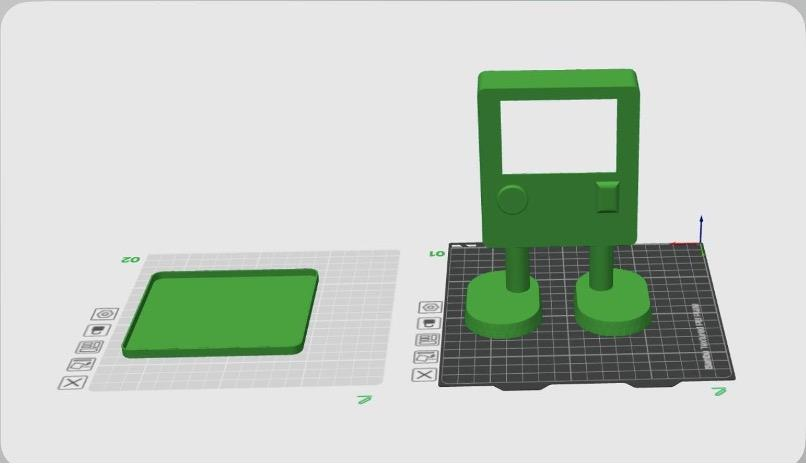
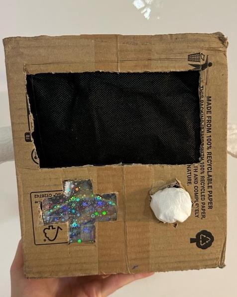
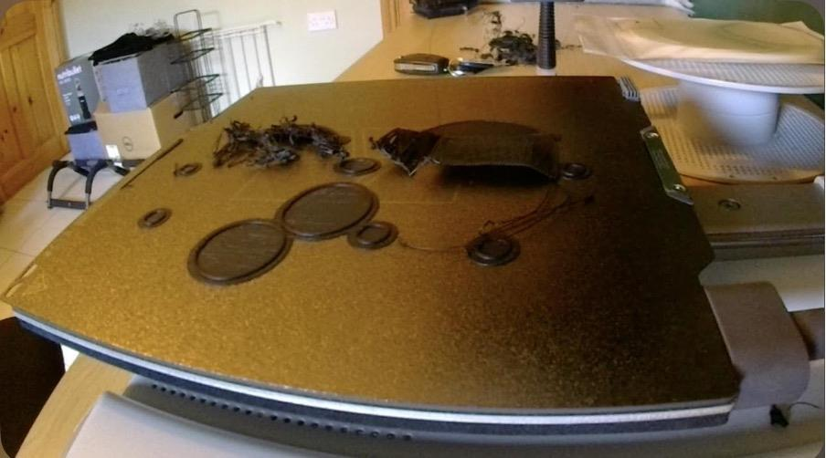
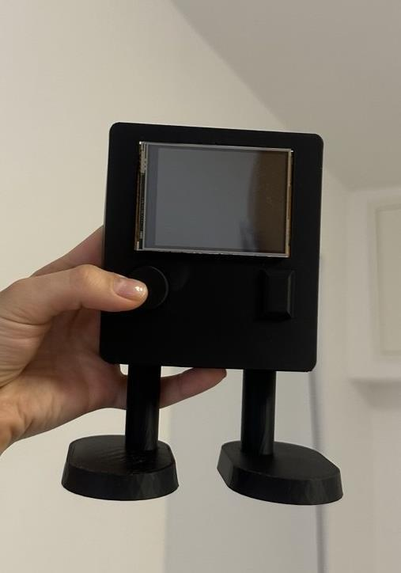
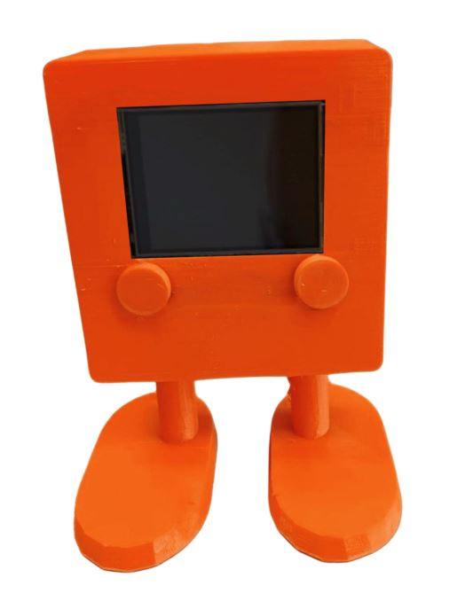

NeuroTalki
NeuroTalki is a communication robot designed for neurodivergent children — specifically those who use PECS (Picture Exchange Communication System) and Makaton to express their needs. The idea came from firsthand experience working with neurodiverse children and a frustration with existing solutions: printed cards get lost, Makaton training is inaccessible, and nothing brings both systems together in one place. The project aligns with UNESCO Sustainable Development Goals 3, 4, 9 and 10 — designing for health and wellbeing, quality education, innovation and reduced inequality.

The design process moved from rough sketches through two cardboard low-fidelity prototypes used to test screen placement, stability and ergonomics before being fully modelled in FreeCAD



The robot combines a touchscreen interface with audio and video output. When a child taps a picture, NeuroTalki says the word aloud and plays a short Makaton sign video simultaneously supporting visual, auditory and gestural learning in one interaction. At 25cm tall with rounded edges, soft curves and a stable base, every design decision prioritised safety, durability and child-friendliness.

The full development process, material selection and technical documentation can be viewed in the project report.